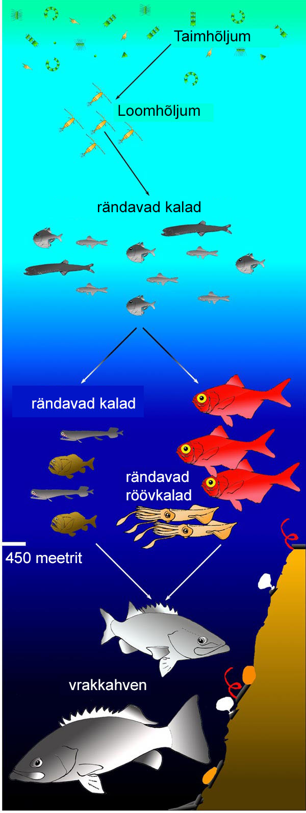

Veeökosüsteemid katavad üle kahe kolmandiku maa pindalast ning koosnevad veekeskkonnast sõltuvate taimede ja loomade kogumitest. Peamisteks veeökosüsteemideks on mere- ja mageveeökosüsteemid. Neist esimeses on palju rohkem soola kui teises. Kuigi mageveeökosüsteemid katavad vähem kui ühe protsendi maa pindalast, on nad siiski koduks suurele hulgale eluvormidele. Näiteks elab mageveeökosüsteemides umbes 40% kõikidest kalaliikidest.
Tüüpiliseks mageveeökosüsteemi röövloom-saakloom suhte näiteks on haugid ja särjed. Harilik särg (Rutilus rutilus) on mageveekala, mis on levinud suuremas osas Euroopas. Särg kasvab enamasti 35cm pikkuseks ning ta toitub taimsest materjalist, veekogu põhja lähedal elavatest selgrootutest ja planktonist. Haug (Esox lucius) kuulub põhjapoolkera mageveekogude tüüpiliste karnivoorsete kalade hulka. Haugid võivad kasvada rohkem kui meetri pikkuseks ning kaaluda enam kui 20kg. Nad toituvad väiksematest kaladest.
Tüüpilisteks autotroofsete organismide esindajateks mageveeökosüsteemides on vetikad. Nagu maismaataimede puhul, kasutavad ka vetikad orgaaniliste ühendite tootmiseks päikeseenergiat. Veekogude toiduahelad põhinevad vetikatel. Enamik selgrootuid on herbivoorid või detrivoorid. Tippkiskjateks on kalad. Paljudel juhtudel kuuluvad kõrgema astme tarbijate hulka ka linnud ja kahepaiksed. Paljud kalad toituvad vees hõljuvatest selgrootutest. Ka osad linnud võivad püüda suuremaid selgrootuid, kes on kalade poolt söömata jäänud. Teised linnud võivad toituda aga veepinnal olevatest putukatest.
Järve toiduahela aluseks on samuti fütoplankton (peamiselt vetikad). Järve ülemises kihis elab mitmekesine mikroskoopiline zooplankton. Zooplankton toitub vetikatest. Kui järve vesi on läbipaistev, tarbib zooplankton ära suurema osa vetikatest. Kui järvevesi on hägune, on vetikad ülekaalus.
Veeökosüsteemi troofilised tasemed. Allikas: http://creationwiki.org/File:Food_web1.jpg